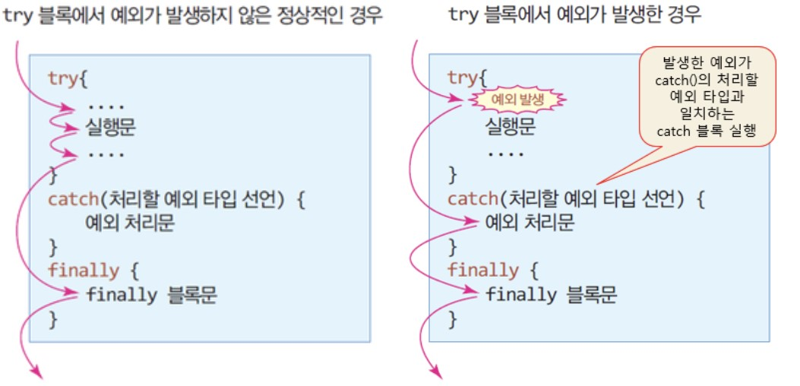

Java 예외 처리
Java에서는 예외(Exception)와 오류(Error)를 구분하여 처리합니다.
예외는 프로그램의 실행 중 발생할 수 있는 예상된 예외 상황을 나타내며,
오류는 일반적으로 복구할 수 없는 심각한 문제를 나타냅니다.
예외 처리 방법
Java에서 예외가 발생하면, 해당 예외를 처리하기 위한 try-catch-finally 구문을 사용하여 구현할 수 있습니다.
- try블록 내에서 예외가 발생하면, 해당 예외를 처리할 catch블록으로 제어가 이동합니다.
- catch블록에서는 발생한 예외를 처리합니다.
- finally블록에서는 예외 발생 여부와 상관없이 항상 실행되어야 하는 코드를 작성합니다.